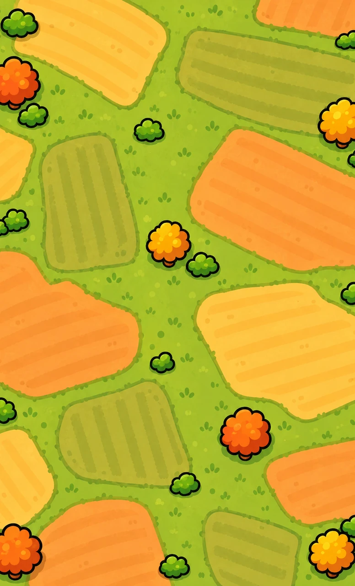

BiegaMy · Miasto Dobra
Miasto Dobra
— kmzbudowane przez ludzi

Pieniądze idą prosto do organizacji prowadzących zbiórki. BiegaMy nic nie przyjmuje.
Dotknij ulicy na mapie, żeby zobaczyć jej kartę i drabinkę poziomów. Każda ulica zaczyna od biegu.
Dla firm ›Prototyp Miasta Dobra. Prawdziwa jest jedna ulica: jej liczby pochodzą z publicznego licznika akcji i tylko one wchodzą do licznika miasta. Pozostałe ulice są przykładami z wymyślonymi danymi. Aplikacja tylko liczy kilometry; wpłaty idą zawsze bezpośrednio na oficjalną zbiórkę organizacji. Polityka prywatności